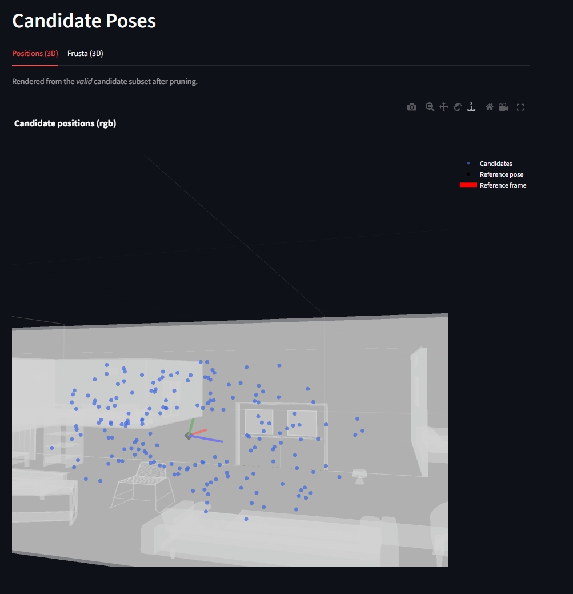
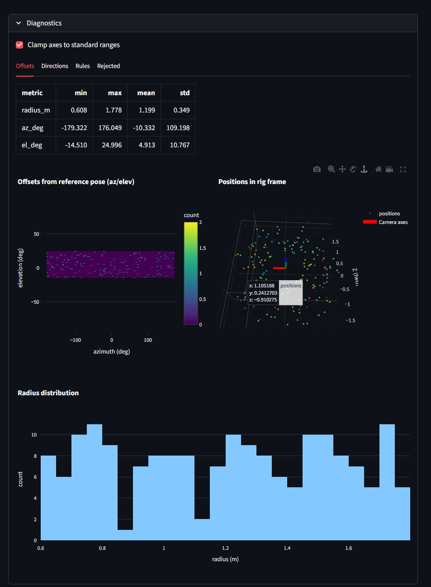

Action Items & TODOs
1 Overview
This page consolidates all open tasks, questions, and references for the ASE/ATEK + EFM3D NBV project. Nothing has been removed; items are reorganized for clarity.
2 Open Questions & Constraints
- ASE single trajectory: Each scene has one prerecorded egocentric path; no arbitrary novel viewpoints.
- For 100 validation scenes, GT meshes exist (EFM3D release) → usable for oracle RRI.
- For other scenes, EFM3D-predicted meshes act as pseudo-GT.
- Depth: ASE depth maps are GT.
- Sparse SLAM PC: Non-GT point clouds are semi-dense; need a strategy to compare candidate-view point clouds against provided SLAM PCs.
- Action space: Start with discrete candidate selection (VIN-NBV style). Later: continuous pose generation (GenNBV) with collision-free sampling using free-space voxels.
- Future work: learn to generate continuous poses directly, whose fitness can than be quantified using the RRI predictor; here we can also consider the free space voxels that are used in EFM3D to avoid collisions.
- Rendering tech debt: PyTorch3D path currently returns NDC z-buffer; needs metric depth conversion (or switch to non-NDC rasterisation with znear/zfar) before we can rely on hit-ratio diagnostics.
- Candidate Generation:
- Does it make sense to filter out all invalid candidates (i.e. those that collide with the mesh, are to close to it or don’t have a straight line of sight from the reference pose)? Wouldn’t it make more sense to include them with strong penalties in the loss function?
- Allow directions in the opposite direction of the reference pose - which are likely to see completly new areas of the scene, and thus yield a high RRI; but this movement is less likely in a real-world scenario as the user would have to turn around completely to look in that direction.
- Should we allow any roll angle for now (i.e. one less feature to encode for the VIN)?
- CORAL:
- The ordinal tresholds need to be known apriori and depend upon the distribution of RRI values in the training data and hence our CanidateGeneration settings.
3 VIN v2 architecture alignment (from review)
3.1 Initial considerations
- Semidense projection is part of the official VIN v2 architecture; documentation should reflect the per-candidate projection features and where they enter the head.
- FiLM usage in VIN v2 is now documented as an optional conditioning mechanism; keep or remove based on ablations.
3.2 Action items
-
- Done: Added
candidate_valid+valid_fractoVinPredictionand updatedVinModelV2to populate them.
- Done: Added
-
- Done: Implemented derived channels and raised a
ValueErrorfor unknown entries.
- Done: Implemented derived channels and raised a
-
- Done: Clamp is applied to the ratio after
log1pnormalization.
- Done: Clamp is applied to the ratio after
-
- Done: Split K/V tensors and added a residual + LN + MLP block for stability.
-
- Done: Updated
docs/contents/impl/vin_nbv.qmdto include semidense projection + MHCA frustum features, trajectory context, and current defaultscene_field_channels.
- Done: Updated
-
- Done: Added unit tests for
counts_normrange,scene_field_channelsvalidation, and K/V separation; added integration checks on a real snippet for semidense projection + frustum features.
- Done: Added unit tests for
4 Highest Priority
4.1 Training
4.1.1 Lightning
4.1.2 DatamModule
4.2 Metrics
-
Consider mesh-to-distance-field acceleration and room-level cropping to avoid unrelated geometry.
Done: Just crop the mesh to a bounding box that contains both the semi-dense SLAM PC and all candidate PCs.
-
5 Candidate View Generation & Sampling
5.1 Current status
Candidate center sampling (azimuth/elevation/radius caps) and rule-based pruning are implemented in
oracle_rri/oracle_rri/pose_generation/.-
Done:
CandidateViewGeneratorConfig.align_to_gravityuses a gravity-aligned sampling pose (yaw preserved, pitch/roll removed).
5.2 Remaining issues (candidate poses)
{kind=link}
-
view_max_azimuth_deg/view_max_elevation_degshould be reported as local yaw/pitch about the candidate camera’s +Y/+X axes (LUF).view_roll_jitter_degshould be reported as twist around the sampled forward axis (LUF +Z).- The Streamlit diagnostics should plot these same quantities for
view_dirs_delta(notPoseTW.to_ypr, which uses a different axis convention).
-
- ZYX Euler /
PoseTW.to_yprcomponents do not correspond 1:1 to our view azimuth/elevation/roll knobs. - Some components can become identically ~0 for roll-free poses (by construction), which can look like “a bug” when it is really a decomposition choice.
- ZYX Euler /
{kind=link}


Done: Applied
rotate_yaw_cw90to the reference pose before generating candidate poses around it.
-
Root cause: After we made
rotate_yaw_cw90(reference_pose)part of the physical candidate-generation pipeline (rig-basis correction), the candidate frusta plot still appliedrotate_yaw_cw90again for display. Sincerotate_yaw_cw90is a 90° twist about the local +Z/forward axis (i.e. a roll), this adds a constant extra roll offset on top of the random roll jitter, making the “up” axis cue swap with “left” once jitter is enabled.Done: Candidate plots now default to
display_rotate=Falseandrender_candidates_pageexplicitly disables the extra display rotation for frusta + reference axes, so the plotted frusta match the physical pipeline.
{kind=link}
{kind=link}
The candidate frusta diagram is now consistent with the physical pipeline (no extra display twist on top of the already-corrected reference pose):
{kind=link}
Done: The mismatch was a plotting-only double-application of
rotate_yaw_cw90.
Previous Considerations:
- Implement
CandidateViewGeneratorand auxiliary modules inoracle_rri/oracle_rri/pose_generationthat generateNcandidate SE(3) poses (roll-free base orientation) around the latest camera position in the trajectory. Must generate poses of typePoseTW(external/efm3d/efm3d/aria/pose.py).- Strategies: uniform over half-sphere with min/max radius & elevation, free-space only, room-bounded (SSL for train, occupancy for eval).
- Collision check: segment from last pose to candidate must not intersect mesh/voxels.
- Modular strategy selection via enums/config that allows easy extension and combination of strategies / sampling rules.
- The view direction generation in our pose_generation did not work as expected when selecting a
view_sampling_strategy(e.g.uniform_sphereorforward_powerspherical). Theview_direction_mode-based deterministic generation, however, worked (reliably pointing away/towards the reference).- We want to generate random deviations from deterministic view directions by adding bounded jitter.
- This should be configurable via
view_max_azimuth_degandview_max_elevation_deg(preferred over a singleview_max_angle_deg). - We also want minimal deviations from a perfectly roll-free base frame, controlled via
view_roll_jitter_deg.
The PositionalSampling now works as expected and I tried fixing the directional sampling, but I’m still having some issues here!
- In our current version, we don’t get any points or even the frame axes in
plot_position_sphere(offsets_ref, title="Offsets on unit sphere", show_axes=True). This worked in our previous version! What is causing this? Why did it work previously but, not anymore? - provide interpretations of the roll, pitch, yaw diagrams in the differen frames!
- the pitch histogram in the world-frame doesn’t make sense to me - should’t it be covering pretty much the entire range as we have a torus around the reference pose?
- always keep in mind that the project aria frames have to be transofmed using
rotate_yaw_cw90when being displayed!
6 Rasterized Rendering to Generate Candidate Point Clouds
- We now implement candidate rendering + backprojection fully in
oracle_rri/oracle_rri/rendering:CandidateDepthRenderer(PyTorch3D rasteriser) renders metric z-depth maps from the GT mesh for candidate poses.build_candidate_pointclouds(CandidatePointClouds) backprojects depths into world-frame point clouds and fuses them with the semi-dense SLAM point cloud.
The CandidateDepthRenderer.render(...) yields a CandidateDepths dataclass:
depths:Tensor['C','H','W']metric z-depth (metres) in the camera frame (+Z forward).- PyTorch3D returns
z=-1for miss pixels (no face hit).
- PyTorch3D returns
depths_valid_mask:Tensor['C','H','W']boolean validity mask:pix_to_face >= 0andznear < depth < zfar(seeCandidateDepthRenderer).
poses:PoseTWworld←camera extrinsics for each rendered candidate.reference_pose:PoseTWworld←reference (rig) pose around which candidates are defined.candidate_indices: indices into the full candidate list (keeps UI ordering stable after filtering).camera:CameraTWintrinsics used for rendering (optionally downscaled viaresolution_scale).p3d_cameras: matchingPerspectiveCamerasused for rendering and unprojection.
6.1 Action Items
6.2 Previously observed issues
- Cameras solely looking at a blank wall will have high RRI, as semi-dense point clouds will not have many points in these areas. However, this does not make sense as these views should receive a high mesh to point cloud distance - completeness. Also, these views sometimes manage to “look through” the walls and render points that are behind the wall.
- Some poses looking towards walls, that are quite close to the candidate pose, will yield dpeth maps and point clouds that don’t correspond to what would be expected from the GT mesh and the given pose.
- All backprojected points seem to lie on one side of the refernece pose - in front of it. All candidate views that look in another direction yield rendered dpeth maps that are either invalid or backproject into the same area in front of the reference pose, even though their pose doesn’t correspond to that area. Candidates that naturally look in the direction of the reference pose seem to work fine.
A potential reason for this issue might be that Project Aria while using LUF, has a contention that relies on a cw 90 degree rotation about the z-axis of the camera frame before displaying or rendering objects in any camera frame. We previously applied
rotate_yaw_cw901 during visualization only. But lately incorporated it into the candidate generation - i.e. applied it to the reference pose before generating candidate poses around it.
The following image illustrates how all candidate poses’ backprojected point clouds lie in front of the reference pose - also in front of generally all poses in the trajectory. Eventhough, some of the candidate frusta should look in the opposite direction (approx. negative y world) the backprojected points still lie in front of the reference pose.
{kind=link}
The backprojected point cloud doesn’t correspond to the visualized candidate pose frustum! The following two figures illustate the same candidate pose that looks to the right of the reference pose - away from it - towards the wall, being relatively close to it.
{kind=link}
{kind=link}
Another candidate pose that is looking up and away from the general view direction of the reference pose, backprojects points that lie in front of the reference pose - similar to all other candidate poses, and also backprojects points that lie on the other side of the wall. The depth histograms of these invalid poses often show a peak at depth = -1, indicating no hits! Futhermore, while it rendered the floor, ceiling and one wall, it did not render the objects in the room.
{kind=link}
{kind=link}
The following backprojection stems from a candidate pose that was looking in the same approximate direction as the reference pose - towards postivie y world. Here the backprojected point cloud seems to correpsond to the displayed candidate pose frustum.
{kind=link}
While poses 26 and 27 seem to have valid depth maps and backprojected point clouds, their depth-histograms also show a significant amount of -1 depth values, indicating no hits for many pixels which is unexpected given the valid looking depth maps. This might imply that the order of our candidate poses, depth maps or backprojected pointclouds is mismatched somewhere in the pipeline.
{kind=link}
{kind=link}
{kind=link}
Resolution (what was wrong, and what we changed):
- The “frusta vs. backprojected points don’t match” symptom was caused by two coordinate-convention bugs:
- PoseTW ↔︎ PyTorch3D extrinsics mismatch:
PoseTWuses a column-vector convention; PyTorch3D camera transforms use row vectors.- Fix: construct
PerspectiveCameras(R=poses.inverse().R.transpose(-1,-2), T=poses.inverse().t)so the renderer/unprojection uses the same world→camera mapping asPoseTW.
- Fix: construct
- Wrong unprojection coordinate space: we were feeding raster pixel indices directly to
unproject_points(..., from_ndc=False).- Fix: convert pixel centers
(x+0.5, y+0.5)to PyTorch3D NDC using min-side scaling and callunproject_points(..., from_ndc=True).
- Fix: convert pixel centers
- PoseTW ↔︎ PyTorch3D extrinsics mismatch:
- The “large spike at depth=-1” in histograms is expected for miss pixels in PyTorch3D’s z-buffer.
- Fix: always use
depths_valid_maskwhen computing hit ratios / histograms and when backprojecting.
- Fix: always use
- The “look-through-walls / points behind walls” artefact was a consequence of the same projection/backprojection convention mismatch above, not a mesh/raycasting bug.
- Fix: after the extrinsics + NDC-unprojection fixes, candidate PCs align with the GT mesh.
- The “blank wall has high RRI” observation is not (necessarily) a rendering bug.
- Status: still an open oracle/metric design question if we want the oracle to reflect semi-dense SLAM failure modes on low-texture surfaces. With GT depth, newly observed wall surfaces can legitimately reduce mesh distances even if real semi-dense reconstruction would not add points there.
rotate_yaw_cw90is visual-only and must not be applied to the physical geometry used for rendering/backprojection.- Fix: keep all rendering/backprojection in the physical Aria LUF frame; apply
rotate_yaw_cw90only in plotting (e.g. reference axes in the frusta plot).
- Fix: keep all rendering/backprojection in the physical Aria LUF frame; apply
6.3 Visualization (Streamlit)
The Streamlit app is our “glass box” for validating the oracle RRI pipeline end-to-end (data → candidates → renders → candidate point clouds → RRI) and for debugging caching / coordinate-frame issues.
Current implementation (refactored app):
- Entrypoint:
uv run nbv-st→oracle_rri/oracle_rri/streamlit_app.py - Package:
oracle_rri/oracle_rri/app/app.py: page wiring + run/refresh controls + navigationstate.py: typedAppStatestored inst.session_statecontroller.py: stage orchestration + typed caches (nost.cache_*)ui.py: layout + widget helperspanels/: plotting-only page renderers (UI + plots only)
- Shared compute pipeline:
OracleRriLabeler(oracle_rri/oracle_rri/pipelines/oracle_rri_labeler.py) used by the RRI page and reusable for training/CLI.
6.3.1 Non-issues / Requirements Checklist
6.3.2 Issues & Resolutions (historical)
6.3.2.1 Issue: Dashboard was opaque and hard to reuse for training/CLI
What was wrong: The legacy app in
oracle_rri/oracle_rri/dashboard/mixed UI, caching, and compute; this made the data-flow hard to reason about and prevented reusing the exact same code path for online label generation.Fix: Rebuilt the app in
oracle_rri/oracle_rri/app/with explicit separation of concerns:- orchestration in
PipelineController, - compute in
OracleRriLabeler(oracle_rri/oracle_rri/pipelines/oracle_rri_labeler.py), - plotting-only page functions in
panels/, - typed session state (
AppState) instead of “untyped cache blobs”.
- orchestration in
6.3.2.2 Issue: “Run ALL” / “Run / refresh …” didn’t actually recompute (cached results reused)
What was wrong: “Refresh” UI controls were not correctly invalidating downstream stages, so reruns reused stale results (especially when switching configs or sample indices).
Fix: Added explicit, typed stage caches keyed by
(cfg_sig, sample_key, ...)and aforce=Truepath for refresh buttons inPipelineController(oracle_rri/oracle_rri/app/controller.py).
6.3.2.3 Issue: Candidate Renders showed the wrong number of candidates
What was wrong: The depth renderer oversampled candidates for robustness and the UI displayed the oversampled batch instead of the requested
max_candidates.Fix:
CandidateDepthRenderernow caps the final batch tomax_candidates_finaland keeps indices stable viaCandidateDepths.candidate_indices(render subset indices into the full candidate list).
6.3.2.4 Issue: Candidate Renders still asked to build CandidatePointClouds (even after running the RRI page)
What was wrong: Depth rendering and depth-hit point cloud construction were treated as two unrelated “stages” in the UI, so running RRI didn’t guarantee the Candidate Renders page had the
CandidatePointCloudsready.Fix: The app now treats the “renders” stage as
(depth_batch + candidate_pcs):PipelineController.get_renders()computes and caches both in one stage,- the RRI page uses the same pipeline (
OracleRriLabeler) so the computed PCs are shared.
6.3.2.5 Issue: UI clutter / nested expanders / nested status blocks
What was wrong: Nested containers made it hard to find the relevant controls and also led to confusing “where am I in the pipeline?” moments.
Fix: Each page now has a single
Diagnosticsexpander with tabs (no nested expanders) and plot options live directly above the plots they affect.
6.3.2.6 Issue: Rendering/backprojection mismatches were hard to debug (frusta ≠ depth-hit PCs)
What was wrong: Candidate frusta, rendered depth maps, and backprojected point clouds did not align due to pose and pixel/NDC convention mismatches.
Fix: Corrected PoseTW↔︎PyTorch3D extrinsics handling + NDC unprojection and ensured
depths_valid_maskis respected. The full symptom screenshots + fixes are documented above in “Candidate View Generation & Sampling - DONE”.
6.3.2.7 Issue: Startup noise (duplicate config logs + Streamlit/WebDataset warnings)
- What was wrong: Noisy logs and warnings obscured actionable debugging output:
AseEfmDatasetConfigprinted shard-resolution logs multiple times (Pydantic validators run repeatedly in Streamlit).- Streamlit warned about
use_container_widthdeprecation. - WebDataset emitted a
torch.load(weights_only=...)FutureWarning. uv run ...warned aboutextra-build-dependenciesbeing experimental.
- Fix:
- moved dataset “resolved shards” logging from validators →
AseEfmDatasetConfig.setup_target(), - replaced
use_container_width=Truewithwidth="stretch"inst.plotly_chart(...), - filtered the WebDataset
torch.loadwarning inAseEfmDataset.__init__, - enabled
tool.uv.preview = trueinoracle_rri/pyproject.toml.
- moved dataset “resolved shards” logging from validators →
6.4 Data Handling
- Link ASE ATEK shards and GT meshes to raw ASE; resolve scene_id/snippet_id mapping.
- Wrap ATEK dataset/downloader to expose:
- easy ASE ATEK WDS access + GT meshes,
- metadata file combining scene↔︎snippet mapping,
- download of metadata without full payload,
- selection of ATEK snippets based on available GT meshes (
ase_mesh_download_urls.json).
- Download all dataset variants (ATEK, raw ASE, meshes) for scenes with GT.
6.4.1 Offline Dataset
-
efm_snippet_view: EfmSnippetView | None # save efm_snippet_view.efm (dict of tensors) """Optional typed snippet view (None when loading from cache).""" candidate_poses_world_cam: PoseTW reference_pose_world_rig: PoseTW rri: Tensor pm_dist_before: Tensor pm_dist_after: Tensor pm_acc_before: Tensor pm_comp_before: Tensor pm_acc_after: Tensor pm_comp_after: Tensor p3d_cameras: PerspectiveCameras scene_id: str snippet_id: str backbone_out: EvlBackboneOutput # dict of tensors from EVL backbone!- save the enitre output of the EVL backbone instead of EvlBackboneOutput so that we can avoid recomputation if we decide to use different features anywhere down the line.
- dict full OracleRriLabeler results to an offline dataset for fast parallel reading to support multiple workers in the dataloader. Carry a full OracleRriLabelerConfig snapshot but exclude large path lists (e.g. tar URLs / mesh maps).
- the metadata should carry all configuration settings
Done: Added
oracle_rri/data/offline_cache.pywith cache writer/reader, config snapshots (sans tar_urls/scene_to_mesh), andOracleRriCacheDatasetintegration inVinDataModule. -
- We do not want to invalidate samples from other configs (treat them as augmentation), but we need an easy way to identify which cached samples belong to which config so we can drop subsets later.
- Add lightweight bookkeeping (e.g., store
config_hashper index entry or a summary mapconfig_hash -> {count, labeler_signature, backbone_signature, include_*}) plus a small CLI/summary helper.
6.5 ViewIntrospectionNetwork
Goal: Learn a View Introspection Network (VIN) that predicts per-candidate RRI from (i) frozen EVL scene features and (ii) a shell-aware pose descriptor computed in the reference frame. VIN is trained standalone using oracle labels from oracle_rri/oracle_rri/pipelines/oracle_rri_labeler.py.
6.5.1 External References (implementation sources)
- EFM3D / EVL codebase: facebookresearch/efm3d
- VIN-NBV paper (objective + ordinal setup): VIN-NBV arXiv
- e3nn spherical harmonics (use this for pose encoding): e3nn documentation and e3nn GitHub
- CORAL ordinal regression:
- coral-pytorch
- CORAL paper (background): arXiv:1901.07884
- (Optional) volumetric sampling primitive:
torch.nn.functional.grid_sample(3D) — use for voxel/frustum querying
Internal references:
- EVL/EFM3D overview:
docs/contents/literature/efm3d.qmd - VIN-NBV notes:
docs/contents/literature/vin_nbv.qmd - EFM3D symbol index:
docs/contents/ext-impl/efm3d_symbol_index.qmd - EFM3D impl overview:
docs/contents/ext-impl/efm3d_implementation.qmd - Oracle pipeline + metric design:
docs/contents/impl/rri_computation.qmd - Label pipeline implementation:
oracle_rri/oracle_rri/pipelines/oracle_rri_labeler.py
6.5.2 Recent Analysis & Debugging
import wandb
api = wandb.Api()
run = api.run("/traenslenzor/aria-nbv/runs/<RUN_ID>") # e.g. "m3wwhhgv"
Show history data:
print(run.history())m3wwhhgv: - Loss sits near the CORAL “uninformed” baseline (mean ~8.9 for K=15) -> little learning signal. (.codex/vin_nbv_run_m3wwhhgv_analysis.md) - pred_rri_mean is ordinal expected in [0,1], not metric RRI; plotting it against rri_mean is misleading. - Loss correlates with higher rri_mean (corr ~0.74): high-improvement batches are hardest. - ~30% candidates masked on average (voxel_valid_fraction ~0.70) + frequent “0 candidates” warnings. - Likely error sources: occ_pr logits mismatch, frustum FOV clamp + shallow depths, voxel frame mismatch, mean-only global pool, feature scale imbalance. (.codex/vin_model_error_sources.md) - Description of issues encountered in this training run: .codex/vin_nbv_run_m3wwhhgv_analysis.md - Identified potential error sources based on the above analysis .codex/vin_model_error_sources.md
hiiqoirw: - Config: LFF-only pose encoding (no SH), scene_field_channels=["occ_pr"], global_pool=attn, unknown_token=True. - Loss mean 9.37 (random CORAL baseline ~9.7) with minimal improvement over the run (early 9.23 -> late 9.18). - pred_rri_mean_step collapses to a narrow band 0.605-0.633 (std ~0.008); corr(pred_rri_mean, rri_mean) ~0.0. - voxel_valid_fraction mean 0.38 (low); candidate_valid_fraction mean 0.71. Local features likely dominated by unknown token; valid-frac weighting reduces gradients. - Loss vs rri_mean correlation is -0.46: easier on high-RRI batches, weak on low-RRI discrimination (consistent with occ_pr-only signal).
6.5.3 Action Items (summary checklist)
-
- Input:
- raw
efm_snippet_view.efm: efm: dict[str, Any]as input to EVL backbone - candidate poses
PoseTW(N candidates) as input to the view scorer head together with scene features from EVL as well as other potential candidate features. - choose suitable positional encoding for the candidate poses - i.e. learnable spherical harmonics encoding or learnable fourier features.
- the candidate poses should be relative to the reference poses rig position and orientation.
- loss and training objective same as in VIN-NBV
- start with an implementation proposal of the model architecture and training procedure in
docs/contents/impl/vin_nbv.qmd. - For this do a comprehensive review of the EVL architecture to understand how to best integrate the view scorer head on top of it. Consider that we have a simple script to infer EVL. Another good starting point is our EFM3D symbol index and EFM3D implementation overview.
Done: Implemented VIN package code in
oracle_rri/oracle_rri/vin/(frozen EVL + CORAL head), shell+SH pose encoding viae3nnplus 1D Fourier features for the radius, and a Lightning-based training pipeline (oracle_rri/oracle_rri/lightning/+nbv-train/nbv-fit-binner) that usesOracleRriLabeler. Documented the architecture + training procedure indocs/contents/impl/vin_nbv.qmd. - raw
- Input:
-
- All poses coming from the OracleRriLabeler have been rotated by 90 deg cw about their foward axis to allow correct candidate generation in the world frame. However, the poses produced by the EVL do not have this rotation applied.!
- Poses with cw90 deg yaw:
candidate_poses_world_cam: PoseTW,reference_pose_world_rig: PoseTW, extrinsics inp3d_cameras: PerspectiveCameras.
6.5.4 Feature Inventory (what VIN consumes)
6.5.4.1 EVL Features (frozen backbone outputs)
Use EVL as a frozen feature extractor on the raw efm: dict[str, Any].
Currently used by VinModel (via EvlBackboneConfig.features_mode="heads"):
occ_pr(occupancy prediction volume; B×1×D×H×W, logits or probabilities depending on config)voxel/occ_input(occupied evidence from input points; B×1×D×H×W)voxel/counts(observation counts; B×D×H×W, used forcounts_norm/observed/unknown)voxel/T_world_voxel(PoseTW) +voxel_extent(bounds) for WORLD↔︎VOXEL mapping
Optional (available via EvlBackboneConfig.features_mode in {"neck","both"}; not consumed by VinModel yet):
neck/occ_feat(high-dim geometry/context volume; B×C×D×H×W)neck/obb_feat(high-dim semantic/context volume; B×C×D×H×W)
Processing strategy (current implementation in oracle_rri/oracle_rri/vin/model.py):
- Channel compression:
Conv3d(1×1×1) + GroupNorm + GELU→field_dim(default: 16) - Global pooling:
mean(DHW)(optional viause_global_pool=True) - Candidate-conditioned query (required):
- build K frustum points in WORLD by unprojecting a
frustum_grid_size×frustum_grid_sizepixel grid at fixedfrustum_depths_musing PyTorch3DPerspectiveCameras.unproject_points(..., from_ndc=True) - sample voxel features at these WORLD points via EFM3D
pc_to_vox+sample_voxels - aggregate with masked-mean pooling; candidates are masked out if too few samples fall inside the voxel grid (
candidate_min_valid_frac)
- build K frustum points in WORLD by unprojecting a
6.5.4.2 Candidate Pose Descriptors (computed in reference frame)
Source of truth (current VIN I/O contract):
candidate_poses_world_cam: PoseTW(world←camera) andreference_pose_world_rig: PoseTW(world←rig_reference) fromOracleRriLabelBatch.depths(used inoracle_rri/oracle_rri/lightning/lit_datamodule.py).
Descriptor construction:
- Convert to the reference rig frame:
T_rigref_camera = inverse(T_world_rigref) @ T_world_camerat = T_rigref_camera.t ∈ R^3(camera center in reference frame)
- Shell parameters:
- radius
r = ||t|| - position direction
u = t / (r + eps) ∈ S^2
- radius
- View direction parameters (camera forward in reference frame):
- choose camera-forward axis
z_cam = (0,0,1)(Aria depth convention is +Z forward) f = normalize(T_rigref_camera.R @ z_cam) ∈ S^2
- choose camera-forward axis
- Minimal scalar inductive biases:
r(optionallylog(r + eps)viaShellShPoseEncoderConfig.radius_log_input)dot(f, -u)(looking back towards reference center)- optionally
dot(f, u)(looking outward)
Encoding (must use e3nn):
Y_u = SH_L(u)andY_f = SH_L(f)viae3nn.o3.spherical_harmonicswith small degreeL ∈ {2,3}- Pose embedding:
E_u = Proj(Y_u)andE_f = Proj(Y_f)(small MLP/linear stacks)E_r = Proj(FF(r))(orFF(log(r+eps))ifradius_log_input=True)E_scal = MLP([dot(f,-u), ...])E_pose = [E_u || E_f || E_r || E_scal]
6.5.5 Action Items (from scratch, end-to-end)
6.5.5.1 1 EVL feature extractor wrapper (frozen, VIN-facing)
-
- load EVL via Hydra YAML + checkpoint (strict load from
checkpoint["state_dict"]) - run
torch.no_grad()+eval()and optionally freeze params (EvlBackboneConfig.freeze=True) - robust
batchifyhandling (incl. TensorWrapper images) - output
EvlBackboneOutputwith (optional) neck features (occ_feat,obb_feat), head/evidence volumes (occ_pr,occ_input,counts), and voxel pose (t_world_voxel,voxel_extent)
- load EVL via Hydra YAML + checkpoint (strict load from
Acceptance criteria:
- EVL forward runs on
EfmSnippetView.efmproduced byAseEfmDatasetwithout manual preprocessing.
6.5.5.2 2 VIN feature processing (voxel compression + global + candidate query)
-
field_proj = LazyConv3d(1×1×1) + GroupNorm + GELU→field_dim
-
global = mean(DHW)(optional viause_global_pool=True)
-
- build K frustum points by unprojecting a
frustum_grid_size×frustum_grid_sizegrid at fixedfrustum_depths_m(PyTorch3DPerspectiveCameras.unproject_points(..., from_ndc=True)) - sample voxel features at these WORLD points via EFM3D
pc_to_vox+sample_voxels - pool with masked mean across K points
- build K frustum points by unprojecting a
-
- invalid query points do not contribute to pooling
- candidates are masked out via
candidate_min_valid_frac
6.5.5.3 3 Candidate pose descriptor module (shell-aware, SH encoded)
-
Done: Implemented in
oracle_rri/oracle_rri/vin/model.pyby consumingreference_pose_world_rig(world←rig) andcandidate_poses_world_cam(world←cam), forming \(T_{\mathrm{rig}\leftarrow\mathrm{cam}}\), and computing \((r, u, f, \mathrm{scalars})\) in the reference rig frame. -
- uses
e3nn.o3.spherical_harmonicsforuandf - no
so3log - outputs
E_poseper candidate
Done: Implemented as
oracle_rri/oracle_rri/vin/spherical_encoding.py(ShellShPoseEncoder+ config) usinge3nn.o3.spherical_harmonics, with 1D Fourier features for the radius (rby default; optionally \(\log(r+\varepsilon)\) via config). - uses
6.5.5.4 4 VIN scorer head architecture (minimal MLP + CORAL)
-
- inputs:
efm: dict[str, Any]candidate_poses_world_cam: PoseTW(from labeler outputs)reference_pose_world_rig: PoseTW(from labeler outputs)p3d_cameras: PerspectiveCameras(aligned withcandidate_poses_world_cam)
- internal:
- extract EVL head/evidence volumes once per snippet (
occ_pr,occ_input,counts) - compute per-candidate:
E_pose,E_global,E_query - final MLP (2 layers, e.g. 256 hidden) → CORAL logits (K-1)
- extract EVL head/evidence volumes once per snippet (
- outputs:
- logits, expected score (normalized), candidate_valid mask
Done: Implemented in
oracle_rri/oracle_rri/vin/model.pywith shell+SH pose encoding, a minimal voxel field (occ_pr,occ_input,counts_norm), mean-pooled global context, masked-mean frustum sampling for candidates using PyTorch3DPerspectiveCameras, and CORAL logits/expected score outputs. - inputs:
-
Done: Implemented in
oracle_rri/oracle_rri/vin/types.py.
6.5.5.5 5 Training data generation (must use OracleRriLabeler)
-
oracle_rri/oracle_rri/lightning/lit_datamodule.py(VinOracleIterableDataset+VinDataModule)- iterates
AseEfmDataset, runsOracleRriLabeler.run(sample), and yieldsVinOracleBatch(efm, poses, p3d_cameras, oracle RRI + point↔︎mesh diagnostics)
-
nbv-fit-binner(fit + saverri_binner.json)nbv-train(train/val/test; can also run--fit-binner-only)nbv-train --run-mode summarize-vin/nbv-train --run-mode plot-vin-encodings(diagnostic summaries/plots on real oracle batches)- (dev convenience)
oracle_rri/scripts/train_vin_lightning.py
6.5.5.6 6 CORAL loss + bin thresholds (stable + easy)
-
- Fit bin thresholds globally on training RRIs
- Use quantile edges so bins have ~equal mass
- Save binner to JSON (
num_classes+edges) and reference it viaVinLightningModuleConfig.binner_path
Done: Implemented
oracle_rri/oracle_rri/vin/rri_binning.py(RriOrdinalBinner.fit_from_iterable/transform/save/load) and wired it into the Lightning CLI (nbv-fit-binner/nbv-train --fit-binner-only). -
logits: (N, K-1)labels: (N,)integer ordinal class- mask invalid candidates (
candidate_valid∧finite(rri))
Done: Implemented
oracle_rri/oracle_rri/vin/coral.pyusingcoral-pytorchand trained withcoral_lossinoracle_rri/oracle_rri/lightning/lit_module.py. -
- Spearman rank correlation between predicted score and oracle RRI
- top-1 / top-k recall of best oracle view
6.5.5.7 7 Tests (must be real-data integration, not mocks)
-
- pose descriptor correctness from (
reference_pose_world_rig,candidate_poses_world_cam) (r>0, ||u||≈1, ||f||≈1, finite SH) - SH output dimension = (L+1)^2 for chosen L
- voxel query pooling shapes + masking behavior
- pose descriptor correctness from (
6.5.5.8 8 Documentation (implementation proposal)
-
Done: Wrote the initial proposal and implementation notes in
docs/contents/impl/vin_nbv.qmd(EVL interface, shell+SH descriptor, CORAL objective, and a minimal training loop example). Remaining doc items are the frustum query method + threshold versioning + ablations.
6.6 Misc
- Extend candidate generation to continuous policy conditioned on fused occupancy / OBB prior
7 Notes on Implementation Approach
- Use enums/configs to compose candidate sampling rules; keep modules orthogonal (generation, filtering, scoring).
- Prefer streaming + caching in visualization to avoid recomputation.
- Keep tests close to metrics and candidate generation (test-driven as per agent instruction).
Footnotes
- ↩︎
def rotate_yaw_cw90(pose_world_cam: PoseTW) -> PoseTW: """Visual-only 90° clockwise yaw about +Z to match Aria UI convention. Use this **only for plotting/rendering to screen** (e.g. Plotly axes, image overlays). Keep core geometry, sampling, and rendering in the physical Aria LUF frame without this rotation. """ c, s = np.cos(np.pi / 2), np.sin(np.pi / 2) r_roll = torch.tensor( [[c, -s, 0.0], [s, c, 0.0], [0.0, 0.0, 1.0]], device=pose_world_cam.R.device, dtype=pose_world_cam.R.dtype, ) return PoseTW.from_Rt(pose_world_cam.R @ r_roll, pose_world_cam.t)